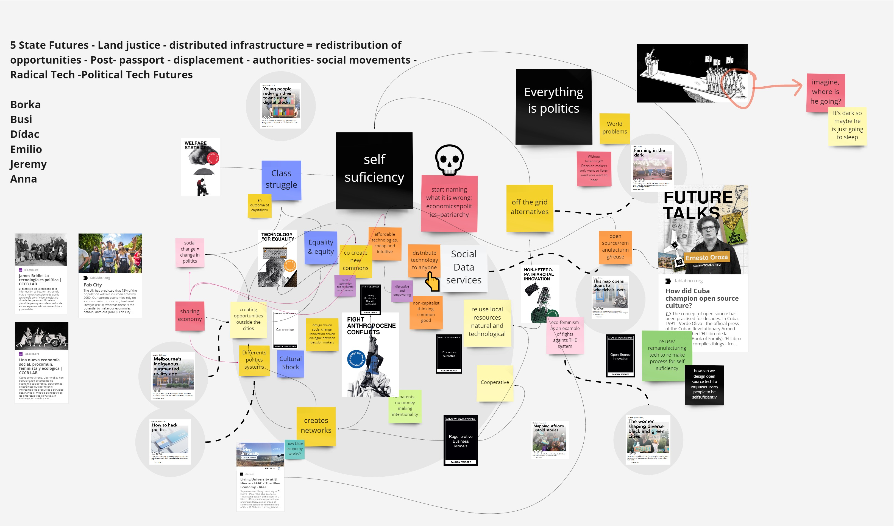

02Atlas of Weak Signals
Bootcamp
15 October 2021
Chosen Weak Signals in relation to “My Fight”
Keeping in mind what my fight is from the previous seminar, The AOWS seminar inspired me to understand the semantics describing my passions, and also gather insights from existing movements and projects. After unpacking my personal development plan with Jonathan during a tutor session, I was encouraged/ challenged to understand meaning implications and connected references with the ideas I am interested in. I came to learn that the lexicon communication This idea led me to think that phys.
In this idea of meaning and language in addition to the assemblage poster of my fight, I came to choose the 3 Weak Signals of Fight Anthropocene conflicts, Pick Your Own passport and Dismantling Filter Bubbles. Further deciphering of what these signals mean, occurred during the Elisava HIMTS research seminar.Perceptions from Elisava Insights Seminar: Phrasing my interests and connecting them to existing movements. Making meaning of Marta Gonzales’ seminar on HIMTS: Elisava research custers, I gathered keywords and phrases connected to my chosen signals.
1. Making meaning of Marta Gonzales’ seminar on HIMTS: Elisava research custers, I gathered keywords and phrases connected to my chosen signals.
- Hacking and acting against systems to regain control over data.
- Surveillance and PsyOps Activism.
- Network politics: Democratizing participation and access to crucial data.
- Sense making with relationships with AI.
- Behavioural social Science to help politics be efficient and effective.
- Territory and fighting Economic Inequality.
- Peace and Justice.
- Building communities.
- Design Engineering and Humans ( transhumanism, Eugenics)
- Improving quality of life and well being for individuals and communities.
- Phygital transformations.
Thereafter, my thought process developed into classifying the phrases into 3 main categories that became the antithesis and solutions to the chosen weak signals.
- Changing Behavioural dynamics in inequality ( Fostering Fairness)
- Anti-PsyOps Activism.
- Conscious information consuming.
2. Multiscalar Diagram
The multiscalar diagram is divided into 4 quadrants relating to what I initially divided as the main themes of my fight (physical, technology, metaphysical and landscape) The approach to the task was dividing notes into problem statements in black and possible solutions statements in White. The thought process helped me visualise and scale very possible solutions to the network of weak signals I found interesting. Looking from the outside in, to inside out brought perspective into understanding that solutions are scalable and doable in closer context, rather than trying to solve global problems instantaneously.

Screenshot of my Multiscalar diagram

My design space developed from the multiscalar diagram
Design space collaboration on Miro
3. Next Steps
Agents of Change I want to collaborate, Contact or Research (Living List):
- Theme 1: Behavioural dynamics in inequality ( Fostering Fairness)
- Tot Raval Foundation.
- Xarxa BCN Antirumors.
- The Behavioral Insights Team.
- Fundació Arrels.